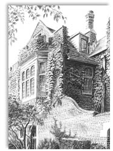

About the Calvary Family
Getting to know us and how we approach e-learning
Introduction
Calvary Life Tutors, an independent educational service organisation, are following the standards and direction indicated by a modern international university. Calvary University, as a private institute of learning has set a new standard for higher education by developing a preferred e-learning format which combines technology, the latest textbooks, interactive Websites, and the local Tutor — all this within a Christian context. This will enable Christian learners to equip themselves for a world that poses increasing demands on the skills and knowledge of its intellectual participants. 
The days of lofty citadels of learning are not yet to be relegated to bygone days, but a new era of global accessibility has combined faculty, student and research services into the realm of cyberspace. This realm demands quick thinking, rapid response and instant delivery. This is a time when university not only signals a diversity of knowledge and its impartation to a select few, but can offer universal availability of learning to all. This means that the rich and the poor can learn together, regardless of standing, race and culture.
Being virtual, the University has unlimited realities of existence – because it can be accessed by every computer screen and can bring knowledge to every laptop. The University has the ability to offer varied e-learning situations to students wherever they are. It provides a link for students to Support Centres, tutors, and professors for the moderation of marks for assignments, group work and practicals as well as answering e-mail questions on the Calvary Academics Platform situated on the Internet. The University also has the ability to gather a faculty that can offer the students access to their research desks and provide their expert knowledge on a subject.
The Calvary family also has a vital reality. On a hilltop stood three crosses: symbolizing the quick and the dead and our Life-giver, Jesus Christ, who emptied Himself for us all. That symbol of choice is also planted at the centre of the lives of our faculty members and students. This reality permeates and invigorates the cause of Calvary Life Tutors.
This is the family you as student may join if you feel at home in this environment. You will enjoy the high standards of our courses, curriculum and programmes. You are most welcome.
Our Aims
Calvary teaches a broad range of academic fields through a diverse group of educational agencies, who were carefully selected to offer affordable programmes to a global audience of students. A separate page on our creed has a list of specific and carefully directed objectives.
Our Foundation
No other foundation can be laid than the foundation that was laid by our Lord Jesus Christ. He had compassion for the poor and healed the sick. He gave new hope to many around Him as He proclaimed the gospel of repentance and forgiveness from sins. We have laid this foundation and build upon it with valuable building materials. The foundation and backbone of our existence has been involvement in the community through service in education and leadership building, social upliftment and ministry to the spiritual needs of various people groups.
Our Heart
We are of Christian character by choice, with a natural respect for the individual and a sincere interest in the person within his or her environment. In practice we have a strict code of ethics upon which we build. This enables us to form strong partnerships to serve students through teamwork which leads towards mutual success.
Our Philosophy
As Christians, whose thought patterns are influenced by a specific model of discipleship, we put great emphasis on the principle of a mentor, which we also call an Academic Tutor. We cherish the lasting effects a personal academic tutor can have, with know-how and experience in the same field of study. Since the tutor must be of stable and strong character, these effects may also include change of character, world-view and spiritual growth. We aim to include practical training, based on real-life applications, to instill relevant skills, values and abilities.
Our Faith
Calvary Life Tutors adheres to the basic Christian principles of faith. We include an applicable Statement of Faith.
Our Faculties
The supporting University has an expanding number of Faculties. Their personnel are highly qualified individuals, many of whom come from various contracted educational agencies. They are contracted from literally all over the world, have access to the Internet and communicate by means of e-mail. Assignments are received and distributed as if the world is one big campus. More details of the different University Faculties are provided. We at Calvary Life Tutors are mostly interested in the first seven in the list, especially number one and two:
- Ministry & Church Management
- Counselling
- Education
- Psychology
- Communication
- Sociology
- Economic, Management & Leadership
- Health Care & Support
- Creative & Performing Arts
Our Future
Calvary has kept up with the challenge of ever increasing technological development to deliver effective programmes to the global village audience. Our utilization of this technology has grown to produce more than expected. Students benefit from the credibility and trust we have, based on the value of our excellent qualifications. We have planned new and relevant domains of learning in various parts of the world. These will unfold according to their priority and require wisdom regarding projected future situations. The main focus will remain the development of the internet Website, as the major component of our delivery vehicle, and our module Resource DVD’s – the modern backpack of information through which we deliver our own brand of e-learning.